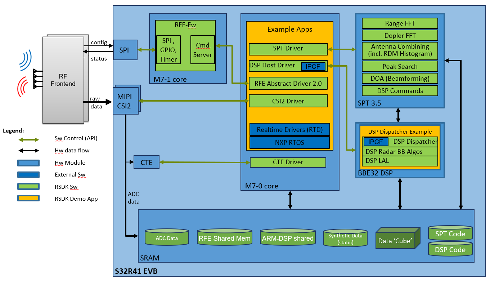
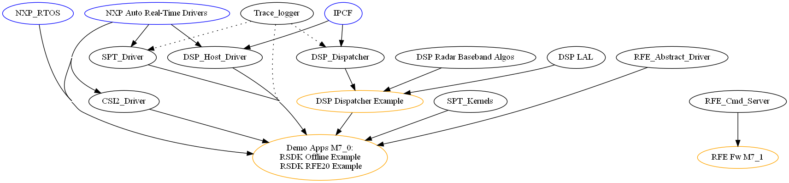

|
RSDK
|
|

| |
|
RSDK
|
|
|
| |
This manual provides information about the interface, components, operating modes, folder structure, build and execution of the NXP Radar SDK software product.
The Radar SDK provides basic radar processing algorithms and device drivers for S32R hardware devices. Its purpose is to facilitate radar algorithm development (using SPT kernels, Matlab models, DSP functions creation of higher level algorithms (starting from the basic blocks supplied with RSDK) , enablement of radar front-end devices and easy application development by integrating driver and platform support.

The Radar SDK provides the following software modules :
RF Abstraction Layer 2.0 for NXP Radar Front Ends: provides a common software interface to configure and run different hardware front-ends.
CSI2 Driver: this module provides an interface between the user application running on the Application CPU cores and the PacketProcessor and only for external data flows, the MIPI-CSI2 interface. Details provided in CSI2 User Guide and CSI2 Driver.
CTE Driver: this module provides an interface between the user application running on the CPU cores and the CTE unit. Details provided in CTE User Guide and CTE.
SPT Driver: this module provides an interface between the user application running on the CPU cores and the SPT hardware accelerator. Details provided in SPT User Guide and SPT Driver API.
SPT Kernels: precompiled routines of SPT code packed into a library, implementing parts of the radar processing flow from Range and Doppler analysis up to Peak Detection and DoA. Details provided in SPT Kernels API.
DSP Host Driver: Enables scheduling of processing jobs on the BBE32EP directly from the host CPU (ARM) , without going through SPT . Details provided in DSP Host Driver. and a few dummy functions which demonstrate the integrated control and data flow with the ARM cores SPT and the DSP Dispatcher. Details provided in DSP Radar Baseband Algo Library.
DSP Linear Algebra Library: BBE32EP function library for accelerated vectorial linear algebra operations. Details provided in DSP Linear Algebra Library User Guide and DSP LAL API.
Application-level support tools: Source code and debug scripts to help develop and debug working applications on the S32R platform. Described in Application support tools. These tools are provided as helper code for applications, it is not within the scope of this release to perform full testing on them.
Matlab bit-exact model for SPT kernels: SPT functionality exposed as Matlab “mex” functions with mathematical sense. Can be used by designers to evaluate the numerical performance of their SPT algorithm in Matlab environment without considering SPT hardware constrains (most notably memory layout). Kernels info and usage document describes the functionality and usage of these models.
The Radar SDK includes executable applications showing how to enable and integrate the Radar Front-end API, CSI2 Driver, SPT Driver, SPT Kernels, DSP Host Driver, DSP Dispatcher and algorithms on the S32R41 platform. These apps currently run on the S32R41 EVB board, with or without a connected radar front-end.
See the RSDK Example Applications for details.
The following tools and dependencies are used for building and executing the RSDK modules and sample applications:
The particular tool versions are specified in the Release Notes for each individual release.
The software described in this document is intended to be used with the following microcontroller devices of NXP Semiconductors: S32R418AA
The complete device revision (cut, configuration, trim etc) is specified in the Release Notes.
The RSDK software modules can be integrated in user applications running on NXP RTOS running on M7-0 core
The RSDK software apps and modules have the following internal and external compile-time dependencies:

The structure of the software deliverable package is the following:
rsdk/
RSDK_Release_Notes.pdf Release Notes for the current package.
api/ Common header files used by all RSDK modules and applications.
rsdk_status.h Defines the return datatype for RSDK API calls, including SPT and RFE error codes.
rsdk_toolchain_helper.h Helpers for accessing linker-command-file-defined symbols
typedefs.h Type definitions for all compilers.
rsdk_< hw_platform >.h Platform header file.
rsdk_< glue >.h Collection of app-level provided glue layers (rsdk_glue_gpio_api.h, rsdk_rfe_glue_spi_api.h ,
rsdk_glue_gpio_api.h, rsdk_glue_irq_register_api.h) that implement functionalities required
by various components of radarSDK. See "Application support tools" -> "Glue Layers" page.
rsdk_osenv.h Defines the targeted OS environment
Apps/
common/ Common source and header files used by multiple applications
include/
src/
DSP_Dispatcher_example/ Project used to generate an executable image for BBE32, which can be integrated in other platform-level apps.
bin/ Contains the build result (*.elf and *.map files)
project/ Design Studio project files
src/ Source files
host_integration/ Source code used for BBE32 integration in the master core application (e.g. RSDK_offline_example)
dsp_image_< hw_platform >_debug.c Debug version of the DSP image file generated automatically from the *.elf file
dsp_image_< hw_platform >_release.c Release version of the DSP image file generated automatically from the *.elf file
Makefile
RFE_processing_example
RFE_processing_example_M7_0 Project application directory for M7_0 core
autosar_cfg/S32R41/EBT/ EB Tresos configuration project
bin/ Contains the executable binary
data/ Data files used by the executable (input files, a placeholder for outputs and references for comparison )
Debugger/*.launch S32DS Launch configuration files (not functional - RSDK-8139)
include/ Header files
Project_Settings/Linker_Files/ Linker files needed to build the application
src/ Source files
T32/ Lauterbach debug scripts for A53, BBE32 and SPT debugging
RFE_processing_example_M7_1 Project application directory for M7_1 core
bin/ Contains the executable binary
board/ Board configuration files
generate/ generated files by S32DS configuration plugins, using the .mex file settings
Project_Settings/Linker_Files/ Linker files needed to build the application
rSDK_drv/ RSDK drivers glue layers
RTD/ necessary RTD files
src/ Source files
RSDK_offline_example/
bin/ Contains the executable binary
data/ Data files used by the executable (input files, a placeholder for outputs and references for comparison )
include/ Header files
src/ Source files
T32/ Lauterbach debug scripts for A53, BBE32 and SPT debugging
autosar_plugins/S32R41/
EBT/eclipse/plugins/
Csi2_TS_T40D47M8I10R0 EB Tresos plugin for CSI2 Driver
Cte_TS_T40D47M8I10R0 EB Tresos plugin for CSI2 Driver
Dsphd_TS_T40D47M8I10R0 EB Tresos plugin for DSP Host Driver
Rfe20_TS_T40D47M8I10R0 EB Tresos plugin for RFE Abstract Driver
Spt_TS_T40D47M8I10R0 EB Tresos plugin for SPT Driver
S32DS/ S32DS plugins/peripherals files
Docs/
RSDK_User_Manual/ This document.
DSP/Cycle_Count Performance report for the DSP LAL
SPT/
Kernels_data_flow Algorithmic details for the SPT Kernels
SPT_bitexact_model/Kernels_info_and_usage.docx
CSI2/
CSI2_driver/ CSI2 driver which is used as data acquisition interface
include/ Header files
low_level/CDD_Csi2.h Defines the CSI2 Driver API (Autosar-CDD compliant)
src/ Source files
CTE/
CTE_driver/ CTE driver which is used as signal triggering between different components
include/ Header files
low_level/CDD_Cte.h Defines the CTE Driver API (Autosar-CDD compliant)
src/ Source files
DSP/
DSP_common/ Common source and header files used by multiple DSP modules
include/
src/
DSP_host_driver/
include/ Header files
CDD_Dsphd.h Defines the DSP Host Driver API (Autosar-CDD compliant)
src/ Source files
DSP_dispatcher/
api/ Dispatcher API header file
bin/ location of DSP Dispatcher library
project/ Design Studio project files
src/ Source and header files for DSP Dispatcher
Makefile For building the sw module outside S32 Design Studio GUI.
DSP_lal Linear Algebra Library
api/ library API header file
bin/ location of the binary library files
build/ build configuration, Makefile
DSP_lal_demos/ Function demo for RSDK application
include/ header files
project/ Design Studio project files
source/ Source files
DSP_radar_bb_algos/
api/ library API header file
bin/ location of DSP example function library
project/ Design Studio project files
src/ Source files for DSP example functions
inc/ Include files for DSP example functions
Makefile For building the sw module outside S32 Design Studio GUI.
licenses License files for the release
platform_setup/ Platform configuration and "glue code" used by RSDK example apps on S32R41 platform
config/IPCF
include/< hw_platform >/
src/< hw_platform >/
RFE_abstract/
RFE_driver/src/ directory for TEF82XX Low Level Driver files
RFE_driver2/ RFE 2.0 files
bin/ Contains the RFE-FW libraries for M7_1
RF_API/ RFE 2.0 API module
RF_Common/ Common files for RFE-API and RFE-FW
RF_FW/ Source code and project files for the RFE Abstract 2.0 firwmare (RFE-FW)
SPT/
SPT_driver/
include/ Header files
common/CDD_Spt.h Defines the SPT Driver API (Autosar-CDD compliant)
src/ Source files for SPT Driver
SPT_kernels/
api/
rsdk_spt_kernels.h API header file for SPT Kernels lib.
rsdk_spt_kernels_< hw_platform >.h Platform-specific API definitions for the SPT Kernels lib.
bin/ SPT Kernels libraries
include/ Header files
project/< hw_platform >/ Design Studio project files
src/< SPT_hw_platform >/ Source files for SPT kernels
Makefile For building the sw module outside S32 Design Studio GUI.
Tools/
Build/
dsp_hex_file_gen.sh Script used in the BBE32 DSP build process to convert the *elf into a hex image
C_model/ C Model for DSP Linear Algebra Library
api/ Main header files
bin/ C model library
DataVisualizer/ Scripts used for post-processing and displaying the output data
Debug_tools/ Source code and scripts used for file IO and application debugging
Matlab_aux/ Support scripts used for matlab post-processing
RFE2_Config/ Sofware used for generating the binary configuration blobs for the RFE Abstract API.
SPT_bitexact_model/ Matlab bitexact equivalent functions for SPT processing
Trace/ Sample code and lib used for producing a light-weight application trace log
Trace_parser/ Files for data conversion from binary trace recordings to text
Makefile, compilerdefs.mak Used for batch building of RSDK components (e.g. SPT and DSP code)
Measurement reports for code size, SRAM usage, stack usage and profiling are not available for this release.
The software components for the M7 core ( SPT Driver, CTE Driver, CSI2 Driver, DSP Host Driver) are Autosar-CDD compliant and are delivered only as source code. They are meant to be integrated and built directly as part of the executable application. See RSDK RFE processing Example for details.
The SPT and BBE32 libraries come as precompiled binaries in the RSDK release. They can be rebuilt either from their corresponding S32 Design Studio projects, or using the < RSDK >/Makefile (see "make" command below).
When using make, the typical command line would be:
See also: "make help" and /compilerdefs.mak for a list of build options
Detailed build instructions are provided for each software component:
| Target Core | Sw modules | Toolchain |
|---|---|---|
| ARM M7 | SPT Driver, CSI2 Driver, CTE Driver, DSP Host Driver, RFE Driver, Example apps | NXP GCC (included in NXP S32 Design Studio) |
| BBE32 | DSP Dispatcher, DSP Radar BB Algos, DSP LAL, DSP Dispatcher Example | Cadence Xtensa Tools: xt-clang compiler, xt-ld linker (included in NXP S32 Design Studio ) |
| ARM M7 | SPT Kernels | SPT 3.5 Assembler (included in NXP S32 Design Studio) |
The build options (compiler, assembler, linker) can be found in the S32 Design Studio projects for RSDK libraries and applications , or in the makefiles which are automatically generated when building the binaries
The software components for the M7 core ( SPT Driver, CTE driver, CSI2 Driver, DSP Host Driver) are integrated as source code and built directly as part of the executable application. See RSDK RFE processing Example for details.
Each software component deployed on the M7 core has an Autosar-compliant:
Full description and usage instructions for each plugin are provided in its component corresponding "User Guide" section.
The SPT and BBE32 libraries are pre-built and are linked directly to the executable applications.
All RSDK libraries are statically linked and no dynamic memory allocation is done by the library functions.
A naming convention applies to all symbols externally-visible from RSDK libraries
The user must place all RSDK sections and symbols in memory explicitly by use of a linker file.
Special attention is required when integrating the BBE32 DSP image into the M7 executable, since the DSP sections must be placed in memory at precise locations specified in the linker file of the DSP executable. See RSDK Offline Example and the DSP Dispatcher Example project in /Apps/DSP_Dispatcher_example for reference.
Apart from the RSDK component libraries, there exist a number of application-level support tools. These should be attached to the application itself as sources (ie. no library). See also debug tools. See the RSDK Example Applications provided with this release for integration examples. They are the perfect starting point for a new application.
This document pertains to the NXP Radar SDK release 0.8.10 for the S32R41 platform. For details concerning this product please refer to the Release Notes.
| Project Name | RSDK |
| Document ID | RSDK_UM_S32R41 |
| Version | 4.1 |
| Date | December 18 2024 |
| Status | Release |